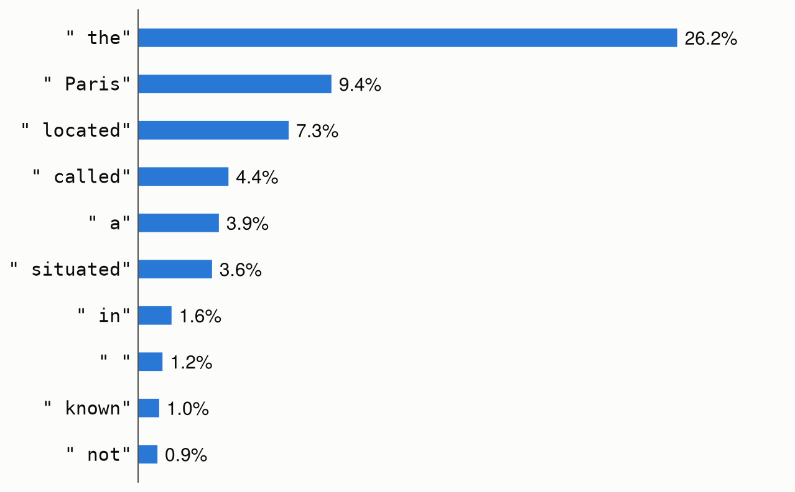

Language models
Metalhead also ports language models from Hugging Face Transformers, starting with the Llama, Qwen, Gemma 3 and Granite architectures (LlamaForCausalLM, Qwen2ForCausalLM, Qwen3ForCausalLM, Qwen3_5ForCausalLM, Gemma3ForCausalLM, GraniteForCausalLM, GraniteMoeForCausalLM, GraniteMoeSharedForCausalLM and GraniteMoeHybridForCausalLM), and the Qwen3.5 models that also read images, Qwen3_5ForConditionalGeneration (see Vision-language models). They load from the Hub like the timm models:
using Metalhead
model = create_model("HuggingFaceTB/SmolLM2-135M")Any Hub repository whose config.json names a ported architecture loads, with the same strict checks. See the list of models for the architectures and the checkpoints they were validated against.
Generating text
Metalhead ports no tokenizer: the tokenizer of a repository is a Tokenizer of HuggingFaceTokenizers.jl, which calls Hugging Face's tokenizers library through Python on the repository's tokenizer.json. Install it with Pkg.add("HuggingFaceTokenizers"). With it loaded, create_processor loads the processor of a model, a TextProcessor of its tokenizer, at the revision of its weights:
using HuggingFaceTokenizers
tok = create_processor("HuggingFaceTB/SmolLM2-135M")
prompt = "The capital of France is Paris, and the capital of Italy is"
ids = tok(prompt).input_ids # the token indices of the prompt
for _ in 1:8 # greedy decoding
push!(ids, argmax(model(ids)[:, end]))
end
println(decode(tok, ids))The capital of France is Paris, and the capital of Italy is Rome.
The capital of theToken indices start at 1, as for Flux's Embedding, and the index of a logit is that of its token: the processor gives token indices, and decode(tok, indices) takes them, as in decode(tok, argmax(logits[:, end])). The tokenizer itself, tok.tokenizer, gives and takes the token ids of Hugging Face, which start at 0.
The tokenizer is that of tokenizer.json, with the padding token (pad_token) of tokenizer_config.json. transformers reads the other settings of tokenizer_config.json too, such as add_bos_token, which create_processor doesn't.
There is no key-value cache yet, so each step of this loop runs the model on the whole sequence.
The logits of the last position give the probabilities of the next token:
using Flux: softmax
p = softmax(model(tok("The capital of France is"))[:, end])
top = sortperm(p; rev = true)[1:10]
[(decode(tok, i), p[i]) for i in top] # (" the", 0.262), (" Paris", 0.094), ...
The ten most probable tokens to follow "The capital of France is", for SmolLM2-135M. Greedy decoding takes the first; sampling takes each with its probability.
Batches
The processor pads texts of different lengths on the right into a batch, with an attention_mask that is 0 for the padding, and the model takes them as they are:
inputs = tok(["The capital of France is", "Hello"])
size(inputs.input_ids) # (5, 2)
inputs.attention_mask # [1 1; 1 0; 1 0; 1 0; 1 0]
logits = model(inputs) # 49152 × 5 × 2The padding takes no part in the attention of the other tokens, so its token doesn't matter, and the logits of each text are those it has alone, at the positions of its tokens, up to rounding. The processor pads with the padding token of the tokenizer, or, for a tokenizer without one, such as SmolLM2's, with the token index 1.
Inputs and outputs
model(ids)takes token indices of size(seq_len, batch_size), or a vector for a single sequence, and returns logits of size(vocab_size, seq_len, batch_size)(or(vocab_size, seq_len)).- Attention is causal. Sequences of different lengths are batched by padding them on the right and passing the
attention_mask, of size(seq_len, batch_size), as a keyword argument:model(ids; attention_mask). The padding takes no part in the attention of the other tokens.model(inputs)takes both from the output of the processor. forward_featuresreturns the hidden states after the final norm, of size(hidden_size, seq_len, batch_size), andforward_headapplies the output projectionlm_headto them.forward_intermediatesreturns the hidden states of the decoder layers, which diffusion models such as FLUX.2 use as text embeddings. It takes token indices, or the output of the processor, such as the batch above:forward_intermediates(model, inputs; indices = [9, 18, 27], intermediates_only = true). Thei-th is transformers'output_hidden_states[i], andfeature_infogives the size and the module of each layer.- The weights are converted to
eltype(Float32by default) when they are loaded, whatever their type on the Hub (oftenbfloat16).
Configuration
The keyword arguments of create_model are the fields of the model's config.json, with the names and defaults of transformers. With a repository, they override its configuration:
create_model("HuggingFaceTB/SmolLM2-135M"; pretrained = false, num_hidden_layers = 4) # random weights
create_model("LlamaForCausalLM"; vocab_size = 1000, hidden_size = 64, intermediate_size = 128,
num_hidden_layers = 2, num_attention_heads = 4, num_key_value_heads = 2)The rotary embeddings are the default ones, or those scaled as in Llama 3.1 and later (rope_type = "llama3") or linearly ("linear"). Options that the ports don't implement raise an error. These are the other rotary embeddings, such as "yarn", and the sliding-window attention of Qwen2 and Qwen3 (use_sliding_window, for the layers past max_window_layers), which their released checkpoints leave off. Gemma 3 does have sliding-window attention: its layers attend either to all the previous tokens or to the last sliding_window of them, as its layer_types say. Granite 4.0 (GraniteMoeHybridForCausalLM) loads only without its Mamba layers, as granite-4.0-350m and granite-4.0-1b are; the -h- models have them.
transformers derives the Qwen2 and Qwen3 classes from Llama's, and their ports reuse the Llama structs: a Qwen2 or Qwen3 model is a LlamaForCausalLM, whose Qwen3 attention layers are Qwen3Attentions. Qwen3.5 has its own Qwen3_5ForCausalLM, whose layers have either a gated delta rule (Qwen3_5GatedDeltaNet) or attention. A Gemma 3 model is a Gemma3ForCausalLM whose decoder is a LlamaModel of Gemma3DecoderLayers, and the four Granite classes are GraniteForCausalLMs.
Mixtures of experts
In Granite MoE (GraniteMoeForCausalLM, and GraniteMoeSharedForCausalLM with a shared expert), the MLP of each layer is a sparse mixture of experts: a router picks the num_experts_per_tok experts of each token, whose outputs are summed with the router's weights. Each projection of the experts is one batched_mul over the tokens grouped by expert, so the experts compute only for their own tokens, as in transformers. Grouping the tokens by expert copies the experts of each token to the CPU, once per layer on a GPU. The load-balancing loss of training is not implemented.